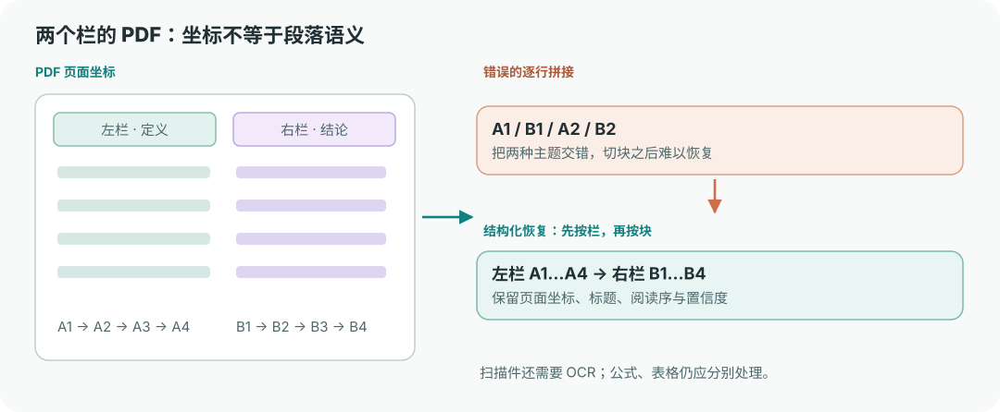
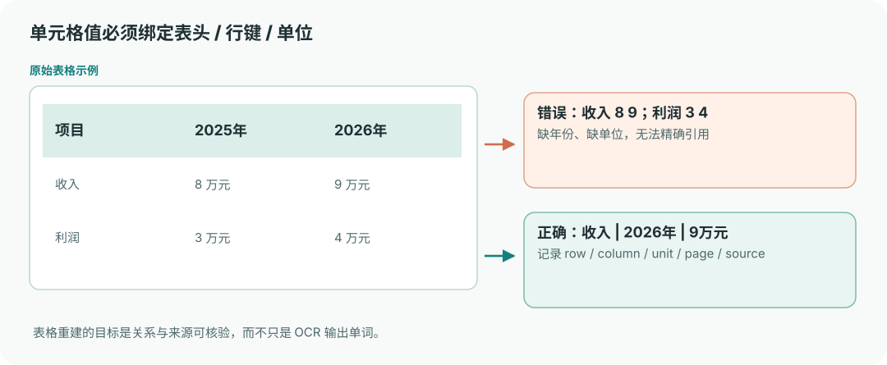
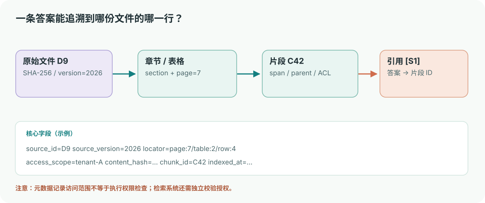
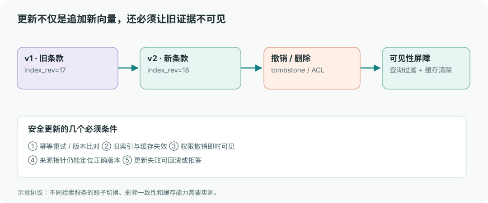

SOURCE → STRUCTURE → EVIDENCE
知识库与文档解析：
从字形到可信证据
一份 PDF 可以被正确显示，却被错误地检索。本篇从阅读顺序、表格关系与来源定位切入，建立可测试、可回滚、可授权的文档摄取数据契约。
MECHANISM / PROBLEM
一份财务表格为何会被检索错？
假设一份报告在同一张表中列出“2025 年收入 8 万元”和“2026 年收入 9 万元”。如果抽取器只吐出“收入、8、9”，检索到的文本虽然包含数字，却失去了数字所依附的年份与单位。随后用户提问“2026 年收入多少”，生成器即使引用了这一片段，也可能给出不可核查的回答。
这不是模型记忆力的问题，而是输入资料的结构性失真：文件在视觉层面可读，但提取后的字符序列已经无法复原表格的二维关系。RAG（检索增强生成）依赖外部证据，因此上游解析质量会限制下游检索和引用的上限。
MECHANISM / PDF
PDF 保存了视觉布局，不保证阅读语义
PDF 的首要目标是呈现稳定的页面，不是定义统一的文章树。页面中的文字可能由独立定位的字形构成。一个两栏页面往往在人眼看来是“先读左栏、再读右栏”，但程序按字符出现顺序抽取时，可能将两个栏位交错。页眉、脚注、数学公式、旋转文字和表格也会打破简单的按 y 坐标排序规则。

文本型、扫描型、混合型不能用同一个假设
文本层可提取
可能读到字符和部分几何坐标，但段落、标题、表格单元格仍需重建；抽得出字不代表读得对。
扫描件或图片页
必须先获得 OCR 识别结果；中文数字、连字符、页码、单位尤其需要抽检。pypdf 本身不是 OCR。
一些扫描 PDF 带有隐藏 OCR 文本层，它可能包含错误识别结果。更可靠的方案是把 OCR 字符、页面图像与检测出的版面区域对应存储，并记录使用了哪些引擎与模型版本。pypdf 文档明确指出文本提取与 OCR、阅读顺序是不同的问题。
MECHANISM / PIPELINE
从连接器到结构块的七个检查点
可维护的数据接入不是简单的“读取→embedding”。一个可审计的摄取过程应当有清晰的输入/输出契约：
| 阶段 | 输入 → 输出 | 必须验证什么 |
|---|---|---|
| 01 连接器 | 源文件、URL、数据库主键 → 源 ID | 来源稳定、认证通过、同步范围合法 |
| 02 类型识别 | 原始内容 → 文件类型与版本 | 不要仅凭扩展名判断格式；防止重复与损坏文件 |
| 03 解析 / OCR | 字节或页面图像 → 字符和位置 | 页码、置信度、坐标、阅读顺序 |
| 04 结构恢复 | 字符 + 位置 → 标题/段落/表格/列表 | 跨栏、表头、脚注和跨页表格关系 |
| 05 规范化 | 结构块 → 统一 JSON 单元 | 单位、日期、语言、段落层级保真 |
| 06 来源绑定 | 结构块 → 带原文定位的可检索记录 | source_id / revision / locator / ACL |
| 07 索引发布 | 记录 → 检索索引与版本快照 | 更新原子性、删除与撤权传播 |
多源内容还应考虑“是否允许保存”。例如企业共享盘文件的读取权限不等于允许在其他租户的向量索引中复用。把访问控制标签附到记录只是建立约定，实际检索必须执行可信的授权判断。
MECHANISM / TABLE
表格：数字必须附着于行、列、单位
假设一张表有两个年份列。如果只存每个单元格的裸值，9 没有意义；如果存“收入 | 2026 年 | 9 万元 | 来源第 7 页表 2 第 2 行”，查询可以匹配年份、字段和单位，也能检查引用来源。

可把结构化表格的一条记录表示为：
其中 hi 为行键，cj 为列头，vi,j 是具体值，u 是单位，loc 是页码/区域/单元格位置。这个公式是工程记录模型，不是某篇论文声称的统一标准。
合并单元格应保留 rowspan/colspan 的语义；跨页表格应重用列头并检查表编号；脚注与单位换算不得隐式丢失。对大表可以建立行级检索表示，但回答财务数值时应能回到原表而非只引用模型编写的摘要。
MECHANISM / TOOLS
工具如何选，而不是按排行榜选
不同文档解析工具属于不同层次：pypdf 擅长直接处理 PDF 结构与文本；带版面模型的 Docling 等系统可输出更高层的文档结构；OCR 引擎解决扫描图像识字；网页正文提取则面对导航、广告与 DOM 噪声。没有一个工具能在所有布局与语言上始终最佳。
| 输入类型 | 轻量基线 | 升级条件与策略 |
|---|---|---|
| 简单文本 PDF | pypdf / PyMuPDF 文本和坐标 | 双栏、图注、阅读序混乱时使用版面恢复 |
| 复杂 PDF 表格 | 结构识别/表格模型（如 Docling） | 行列不一致时抽样比对原图并保留单元格映射 |
| 扫描件 | OCR + 页面区域识别 | 低置信页需要人工复核/二次 OCR |
| HTML 知识库 | DOM 主体内容 + 标题层级 | 动态内容、脚本噪声、权限和正文抽取失败 |
| Markdown / 代码文档 | 结构化解析 Markdown AST | 代码块、公式、表格不要直接按字数打散 |
| 数据库 / API | 字段映射 + 稳定主键 | 强 schema、版本、删除事件、权限 |
官方 Docling 入门示例可按环境安装后运行：
# 可选真实 PDF 解析：pip install docling
# 运行前需准备 sample.pdf；模型可能下载，硬件开销取决于配置。
from docling.document_converter import DocumentConverter
result = DocumentConverter().convert("sample.pdf")
markdown = result.document.export_to_markdown()
print(markdown[:500])
# Markdown 是阅读型导出，不代表页码、bbox 和表格 schema 已自动验收。生产场景若需页码与单元格回链，应保留结构化 DoclingDocument 等源数据，不要只留下 Markdown 字符串。Docling Technical Report 提供了版面分析和表格结构识别方法的技术背景。
MECHANISM / METADATA
出处、权限与文档版本是数据结构
当一个检索块返回给生成器时，应用需要知道的不仅是片段文本，还包括哪个文件、哪个版本、哪个表格位置、谁可以看到它。下图展示“原文 → 段落 → 块 → 引用”的 lineage（血缘）关系。

{
"chunk_id": "sha256-derived-id",
"source_id": "policy:refund",
"source_version": "2026",
"locator": "page:7/table:2/row:4",
"section": "退款规则",
"kind": "table_row",
"text": "地区：中国大陆；退款时限：7天",
"access_group": "support",
"content_sha256": "…",
"index_revision": 18
}这个 JSON 是字段示意，不声称真实输出就是上述字面值。将 source + version + 位置 + 内容用于确定性的 ID，有助于幂等更新和差异比较；但不同系统的 ID 策略可能不同。切块导致偏移变化时需清楚记录是源文本坐标还是规范化文本坐标，避免引用返回错误位置。
MECHANISM / LIFECYCLE
更新、撤销和缓存的一致性
“旧版退出索引”比“新文档写入成功”更难验证。一次政策修改可能涉及索引 shard、近实时搜索刷新、缓存、引用 URL 和用户权限。若只追加新向量而保留旧片段，用户可能同时检索到相互矛盾的政策。

可靠的同步协议通常包含版本号、内容哈希、删除标记、失败重试、回滚路径和可观测更新延迟。权限撤销后的“多久不可见”是安全 SLO，应根据系统能力与业务要求明确规定，不能默认向量库天然支持强一致删除。
MECHANISM / EXPERIMENT
不依赖模型的结构化抽取实验
先不用 PDF/OCR，也可以验证最重要的不变量：表格第 2 行的“7 天”是否与“地区：中国大陆”绑定？同一份源文件、同一版本解析出来的记录 ID 是否稳定？版本变化是否能生成新的 ID？仓库中的 完整示例 examples/structured_ingest.py 只依赖 Python 标准库。
from examples.structured_ingest import EXAMPLE_HTML, ingest_html
records = ingest_html(
EXAMPLE_HTML, source_id="policy:refund",
version="2026", access_group="support"
)
rows = [r for r in records if r["kind"] == "table_row"]
assert len(rows) == 2
assert "地区：中国大陆；退款时限：7天" in rows[0]["text"]
assert all(r["version"] == "2026" for r in records)
print(rows[0]["locator"], rows[0]["text"])从仓库根目录运行 python3 -m examples.structured_ingest，无需 API key、文档模型、网络与第三方依赖。这个 parser 只支持演示用的简单 HTML 结构，不能当作通用 PDF 或复杂 HTML 解析器；对嵌套表格和合并单元格仍需专业实现。
MECHANISM / ACCEPTANCE
验收清单与失败边界
与其用抽取总字数评价解析器，不如准备不同文档类型的 gold 样本：双栏、扫描、带合并单元格的表格、页脚、代码、跨页段落与撤销权限的文件。所有质量指标都应关联可复核的原文位置。
| 样本 | 不变量 | 建议检查 |
|---|---|---|
| 双栏页面 | 同段文字不被另一栏插入 | 标题顺序 + 层级完整性 |
| 财务或政策表格 | 数值与行/列/单位一一对应 | 表格关系准确率 + 人工抽检 |
| 扫描页 | 识别文本和页面位置成对保存 | 关键实体 OCR 误差及失败回退 |
| 带脚注的文档 | 脚注指向正确正文或表格 | 脚注回链与引用范围 |
| 版本变更 | 旧版本不可默认入选 | 重建、缓存失效与回滚测试 |
| 权限撤销 | 无权用户不能取回片段 | 跨租户 / 已撤权测试 |
解析的目标是把原始证据转换为可靠的数据对象；只有来源、结构和权限同时成立，后续的分块与 embedding 才有值得比较的输入。
来源与延伸阅读
- pypdf — Extract Text — PDF 中的文本位置、提取顺序与 OCR 的边界；官方文档
- Auer et al., Docling Technical Report — 版面分析与表格结构识别技术报告
- Docling Quickstart — DocumentConverter 的官方示例与导出接口
- Microsoft Learn — Chunk Documents — 切块和源数据结构的工程注意事项